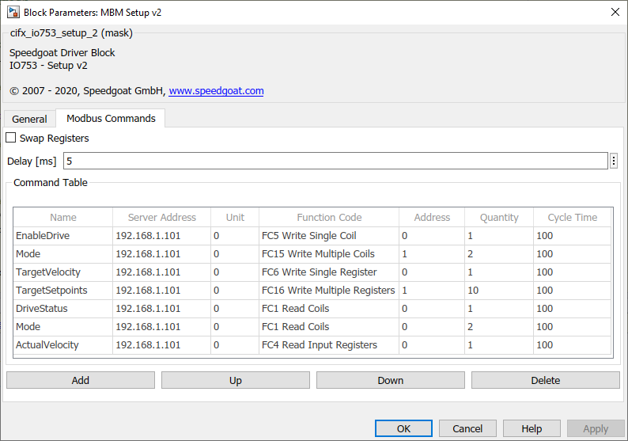

IO753 - Setup v2
IO753 - Setup v2 — Configure the IO753 I/O module
Description
The Setup block configures the protocol stack of the related I/O module and enables the send and receive blocks to exchange data on the network.
![[Caution]](images/caution.png) | Caution |
|---|---|
This block is only supported by MATLAB from R2019b. |
Parameters
- Module ID
The Module ID has two functions:
It logically connects the Setup block and its I/O blocks
It also informs the auto-search feature of the PCI Slot parameter. If only one I/O module of this family is installed, the Module ID must be set to 1. To see how each I/O module maps to a Module ID, use this Speedgoat API:
speedgoat.getIoInterfaces("TargetName", "mySpeedgoat")
This Setup block belongs to two families of I/O modules that use the same hardware for multiple protocols. Across both families, the Module ID must be unique.
IO64X/IO75X (single-node modules): IO641, IO642, IO643, IO644, IO750, IO751, IO752, IO753, IO754, IO755, IO756, IO758
IO64X-32/IO75X-32 (multi-node modules): IO642-32, IO752-32, IO754-32, IO756-32
If the PCI Slot parameter is set to -1 (auto-search), the Module ID must be in the range 1:n, where 'n' cannot be larger than the number of modules of this type installed in the target machine. Not all installed I/O modules need to be used.
To use this Setup block with a multi-node I/O module (IO75X-32 family), the Module ID must be defined as a two-element vector. The second vector element is the sub-module ID. It describes the specific node (1:32) within the I/O module. The 32 nodes are internally connected to form two linear networks (daisy-chain), where the first and the last node of both chains are externally accessible. If one node is not configured (has no Setup block), the chain terminates at this point. The sub-module IDs must therefore start at node 1, 16, 17 or 32 and not have any gaps.
![[Note]](images/note.png)
Note When using I/O modules of both families simultaneously (single-node and multi-node I/O modules), always use explicit addressing in the PCI Slot parameter. Ignore the Module IDs returned by the getIoInterfaces function and instead assign unique Module IDs accross all modules used.
- PCI Slot (-1: auto-search)
There are two approaches for mapping the block to a specific I/O module installed in your target machine. All modules of the same family (see Module ID above) must be configured using the same method.
- Auto-Search: with the default value -1 the I/O module will be
automatically located in the target machine. If you have
multiple modules of the same family, the Module ID defines
which module is associated with this block. To see how each
I/O module maps to a Module ID, use this Speedgoat API:
speedgoat.getIoInterfaces("TargetName", "mySpeedgoat") - Explicit Addressing: to explicitly define the logical
address of the I/O module in the target machine, you can
provide the PCI bus and slot numbers as a vector: [bus,
slot]. To determine these numbers, run the following command
in the MATLAB command window:
speedgoat.getIoInterfaces("TargetName", "mySpeedgoat", "Advanced", true)Note that the PCI address can change whenever an I/O module is added or removed. Usually, auto-search is the best option.
- Auto-Search: with the default value -1 the I/O module will be
automatically located in the target machine. If you have
multiple modules of the same family, the Module ID defines
which module is associated with this block. To see how each
I/O module maps to a Module ID, use this Speedgoat API:
- Bus Start
Automatic: The device starts the communication immediately after the initialization of the real-time application on the target. The communication is maintained even if the real-time application stops.
Application controlled: After initialization of the real-time application on the target, the communication of the slave with the network is off. The device starts the communication immediately after the real-time application has been started. The device stops the communication on the network when the real-time application stops.
- IP Address
Only available if "BootP" and "DHCP" are not set.
- Netmask
Only available if "BootP" and "DHCP" are not set.
- Gateway
Only available if "BootP" and "DHCP" are not set.
- BootP
If set, the device obtains its IP Address, Netmask and Gateway Address from a BOOTP server.
- DHCP
If set, the device obtains its IP Address, Netmask and Gateway Address from a DHCP server.
- Swap Registers
The bytes of a value must be swapped if the sender and the receiver interpret the byte order in different ways (little-endian versus big-endian). The Speedgoat real-time target machine uses little-endian. If the swap option is enabled, all register values from the application context will be swapped before they are sent to the network. All received register values from the network will be swapped before they are submitted to the application context. The swap option only affects input registers and holding registers (transmitted by function codes FC3, FC4, FC6, FC16). Discretes and coils are not affected. Use Byte Reversal blocks instead of enabling the global byte swapping if only single registers need to be swapped.
- Delay
This delay time specifies a fixed time that is inserted between two commands of the command table. It can be used to delay the execution of commands, for example, for a slow server that needs to pause on each request.
- Command Table
This table defines the read and write requests the Modbus client protocol stack performs during model execution. Use the buttons to add, move or delete commands. The number of commands is limited to 256. The I/O module has its own internal process data memory which allows the communication on the Modbus network to occur separately from of the real-time application. Use the Send and Receive blocks to access the process data of the I/O module.

Command propertiesName: The command name is optional and is just used for labeling the ports of the Send and Receive blocks
Server Address: The IP address of the Modbus server whose data will be read or written by the command. The number of servers is limited to 16. Commands related to the same server must be consecutive in the table
If the Modbus server is a ModbusRTU - ModbusTCP gateway, you must assign one unit id for each Modbus RTU server behind the gateway. Leave 0 if your application does not handle Modbus RTU at all
Enter the Function Code of the command. There are codes for reading and writing either bits (discrete inputs, coils) or words (input registers, holding registers):
FC1 (Read Multiple Coils)
FC2 (Read Multiple Discrete Inputs)
FC3 (Read Multiple Holding Registers)
FC4 (Read Multiple Input Registers)
FC5 (Write Single Coil)
FC6 (Write Single Holding Register)
FC15 (Write Multiple Coils)
FC16 (Write Multiple Holding Registers)
Depending on the function code, each command invokes one port either on the Send or on the Receive block.
A Modbus server usually manages 4 data areas:
Coils: readable and writeable bit values
Discrete Inputs: readable bit values
Holding Registers: readable and writeable word values (2 bytes)
Input Registers: readable word values (2 bytes)
The function code specifies the target area of the command. The Address of the command is the address of a particular value within this area. Depending on the function code, the address is either bit-based or word-based.
The Quantity defines the number of values to be read or written per request. It is either a number of bits or a number of words
Each command can be configured with an individual Cycle Time. This time specifies the execution cycle of the command. The maximum value is 60000 ms. For write commands, a cycle time less than 0 causes the I/O module to process the command (transmit the message) only if at least one related value changes (the signal connected to the corresponding input port of the IO753 Send block changes).